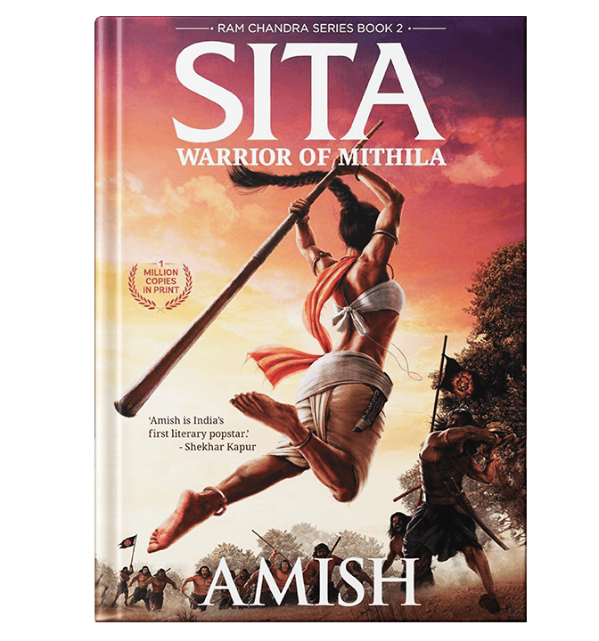
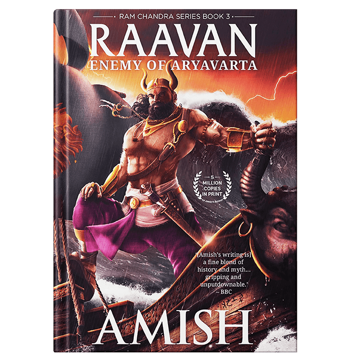
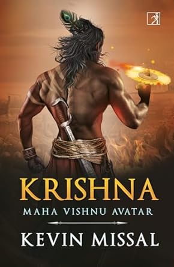
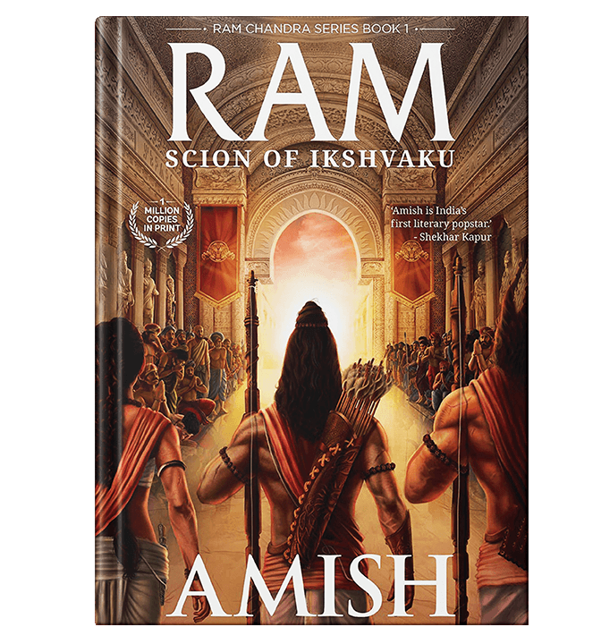
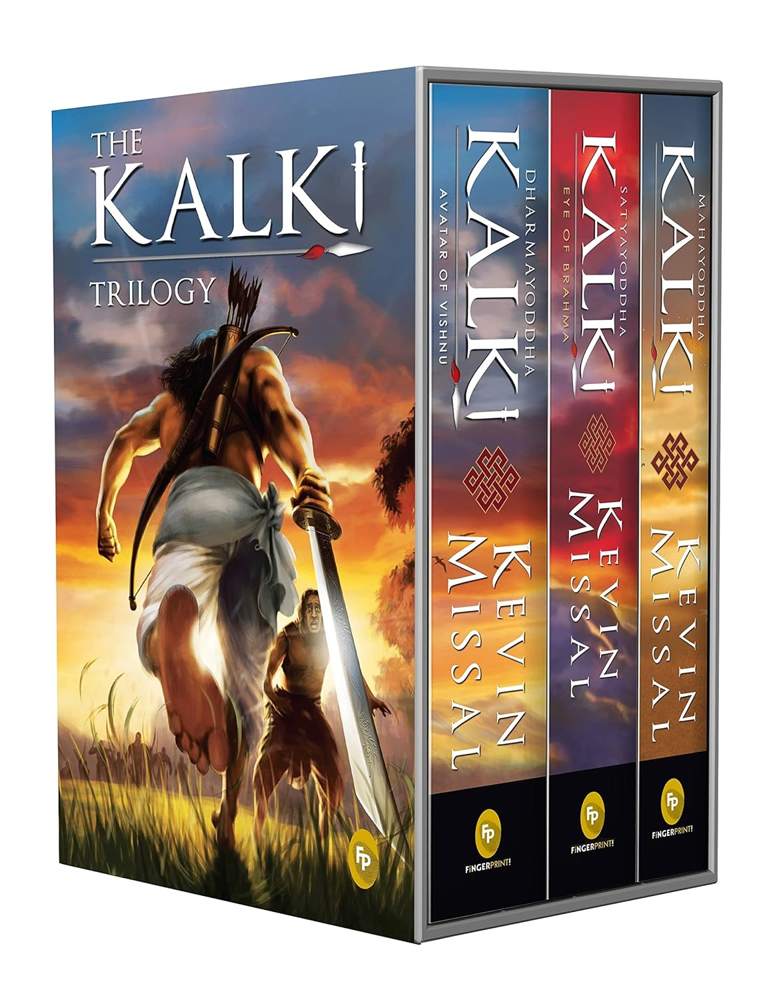
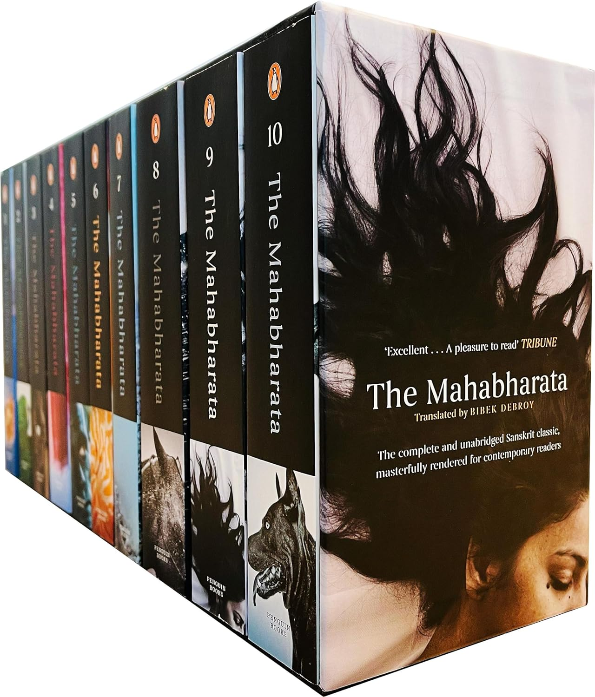

| Name of Book |
Author |
Book Details |
Price |
|
Mahabharat Unravelled: Lesser-Known Facets of a Well-Known History |
AMI GANATRA |
Millennia have passed since the dharma yudhha of the cousins shook the land of Bharata. But this history of our ancestors continues to fascinate us. Even today, we have passionate discussions about the people and their actions in the epic, fervidly defending our favourites and denouncing others. The number of works on the Mahabharata-adaptations, retellings and fiction-that still get written is a testimony to its enduring relevance.
While the general storyline is largely known, a lot of questions and myths prevail, such as-What was the geographical extent of the war? Did Drona actually refuse to take on Karna as his disciple? What were Draupadi's responsibilities as the queen of Indraprastha? Did she ever mock Duryodhana? Were the women in the time of the Mahabharata meek and submissive? What were the names of the war formations during the time? What role did the sons of the Pandavas play? Does the south of India feature at all in the Mahabharata? What happened after the war? These and many other intriguing questions continue to mystify the contemporary reader.
Author Ami Ganatra debunks myths, quashes popular notions and offers insights into such aspects not commonly known or erroneously known, based solely on facts as narrated in Vyasa's Mahabharata from generally accepted authentic sources. For a history of such prominence and influence as the Mahabharata, it is important to get the story right. So pick this book up, sit back and unveil the lesser-known facts and truths about the great epic.
|
Rs 264.
|
|
War of Lanka(Ram Chandra Series Book 4) |
AMISH TRIPATHI |
LANKA WILL BURN. DARKNESS WILL PERISH.
BUT CAN LIGHT ENDURE?
INDIA, 3400 BCE.
Greed. Rage. Grief. Love. Smouldering tinder, waiting to trigger a war.
But this war is different. This one is for Dharma. This war is for the greatest Goddess of them all.
Sita has been kidnapped. Defiantly, she dares Raavan to kill her - she'd rather die than allow Ram to surrender.
Ram is beside himself with grief and rage. He prepares for war. Fury is his fuel. Calm focus, his guide.
Raavan thought he was invincible. He thought he'd negotiate and force a surrender. Little did he know ...
The first three books of the second-fastest-selling book series in Indian publishing history - the Ram Chandra Series - explore the individual journeys of Ram, Sita and Raavan. In this, the epic fourth book of the series, their narrative strands crash into each other, and explode in a slaughterous war.
Will Ram defeat the ruthless and fiendish Raavan, constrained as he is by the laws of Dharma? Will Lanka burn to a cinder or fight back like a cornered tiger? Will the terrible costs of war be worth the victory?
Most importantly, will the Vishnu rise? And will the real enemies of the land fear the Vishnu? For fear is the mother of love.
|
Rs 330.
|
| Sita: Warrior Of Mithila (Ram Chandra Series Book 2) (Ram Chandra, 2) |
AMISH TRIPATHI |
India, 3400 BCE. India is beset with divisions, resentment and poverty. The people hate their rulers. They despise their corrupt and selfish elite. Chaos is just one spark away. Outsiders exploit these divisions. Raavan, the demon king of Lanka, grows increasingly powerful, sinking his fangs deeper into the hapless Sapt Sindhu. Two powerful tribes, the protectors of the divine land of India, decide that enough is
enough. A saviour is needed. They begin their search. An abandoned baby is found in a field. Protected by a vulture from a pack of murderous wolves. She is adopted by the ruler of Mithila, a powerless kingdom, ignored by all. Nobody believes this child will amount to much. But they are wrong. For she is no ordinary girl. She is Sita. Continue the epic journey with Amish's latest: A thrilling adventure that chronicles the rise of an orphan, who became the prime minister. And then, a Goddess. This is the second book in the Ram Chandra Series. A sequel that takes you back. Back before the beginning.
|
Rs 338.
|
 Jaya : An Illustrated Retelling Of The Mahabharat Jaya : An Illustrated Retelling Of The Mahabharat |
DEVDUTT PATTANAIK |
tiny capsule in this book. Other than retelling the interesting parts of the Mahabharata, what makes this book a favourite among the readers is Pattanaik rendering of the various local folklores and tales that are associated with the epic, which have been presented in a whole new genre. With a master stroke, the author has elaborated the storyline by including lesser known folklore stories of the epic, while keeping intact its original form and style.
The book has been divided into 108 chapters and has vivid illustrations along with 250 simple line drawings painted by Pattanaik himself. Besides infusing the different tales from local versions of the epic, the author has also added folk arts aspects picked up from 'Yakshagana’ in Karnataka, 'Terukuttu’ in Tamil Nadu and 'Pandavani’ in Chattisgarh to blend with the narrative.
Stories of Barbareek, Aravan, Astika, Madhavi and Jaimini form a special portion of this book. Other than this, Pattanaik has also introduced some intriguing ongoing traditions, like the worship of Draupadi in temples of Tamil Nadu.
Along with this, a whole section has been devoted to the Kurukshetra war described on the basis of descriptive astronomical information. By infusing these interesting details along with the various local versions of the epic, the author has attempted to create a pan-Indian version of the epic that has, since times immemorial, helped in shaping the culture and history of the whole country.
Published by Penguin, this book may be a great choice for those intrigued to know about the religious and cultural intricacies of the country as well as those who are reading the epic for the first time.
|
Rs 297.
|
| Raavan: Enemy Of Aryavarta (The Ram Chandra, 3) |
AMISH TRIPATHI |
WITHOUT THE DARKNESS, LIGHT HAS NO PURPOSE.
WITHOUT THE VILLAIN, WHAT WOULD THE GODS DO?
INDIA, 3400 BCE.
A land in tumult, poverty and chaos. Most people suffer quietly. A few rebel. Some fight for a better world. Some for themselves. Some don?t give a damn. Raavan. Fathered by one of the
most illustrious sages of the time. Blessed by the Gods with talents beyond all. Cursed by fate to be tested to the extremes.
A formidable teenage pirate, he is filled with equal parts courage, cruelty and fearsome resolve. A resolve to be a giant among men, to conquer, plunder, and seize the greatness that he thinks is his right.
A man of contrasts, of brutal violence and scholarly knowledge. A man who will love without reward and kill without remorse.
This exhilarating third book of the Ram Chandra series sheds light on Raavan, the king of Lanka. And the light shines on darkness of the darkest kind. Is he the greatest villain in history or just a man in a dark place, all the time?
Read the epic tale of one of the most complex, violent, passionate and accomplished men of all time.
|
Rs 271.
|
| KRISHNA: Maha Vishnu Avatar |
KEVIN MISSAL |
What happened after The Great War?After the bloody war in which many heroes won and lost, Krishna, the avatar of Vishnu and the king of Dwarka, stood tall as a divine figure of justice and dharma. But forty years have passed since that day, and now little is known of the elusive god.Pradhyuman, his first born son, now rules with an iron fist but his personal ambition seems to come in between. Will it redeem him or corrupt him further? Balaram, the brother of Krishna, and the Prime Minister of Dwarka, must find a way to form an alliance between warring clans. But delusions of a giant snake haunts him at night. Will he learn more about himself or lose a part of his consciousness in the process? Samva, Lord Krishna’s second born son, has absconded from the pitiful duties of the empire, to plan vengeance against someone he personally hates. But, to achieve his goal, he has to first find his father and learn the truth about his heritage. Will he forgive or pursue further? And in the thick of it, stands as a majestic beacon, none other than Krishna—haunted by his past, weary of his future. Can he break the curse and free himself from the shackles of time? From the chapters of the Mausala Parva, bestselling author Kevin Missal reimagines the life and times of Lord Krishna in a brand new avatar.
|
Rs 352.
|
| Ram - Scion Of Ikshvaku (Ram Chandra Series Book 1) (Ram Chandra, 1) |
AMISH TRIPATHI |
Ram Rajya. The Perfect Land. But perfection has a price. He paid that price. 3400 BCE. INDIA Ayodhya is weakened by divisions. A terrible war has taken its toll. The damage runs deep. The demon King of Lanka, Raavan, does not impose his rule on the defeated. He, instead, imposes his trade. Money is sucked out of the empire. The Sapt Sindhu people descend into poverty, despondency and corruption. They cry for a leader to lead them out of the morass. Little do they appreciate that the leader is among them. One whom
they know. A tortured and ostracised prince. A prince they tried to break. A prince called Ram. He loves his country, even when his countrymen torment him. He stands alone for the law. His band of brothers, his Sita, and he, against the darkness of chaos. Will Ram rise above the taint that others heap on him? Will his love for Sita sustain him through his struggle? Will he defeat the demon Lord Raavan who destroyed his childhood? Will he fulfil the destiny of the Vishnu? Begin an epic journey with Amish's latest: the Ram Chandra Series.
|
Rs 308.
|
| The Kalki Trilogy Set of 3 Books Avatar of Vishnu Eye of Brahma Sword of Shiva |
KEVIN MISSAL |
Kevin has written down a beautiful novel, a retelling of the avatar of Lord Vishnu, Kalki, in a not so “ mythological” manner. He has immense strength, which has been proven time and again by events like defeating enemies twice his size, faster healing of wounds and very sharp fighting skills. He doesn’ t have a decent explanation about the skills he possesses until he meets Kripa aka Kripacharya— a guru who had been a part of the biggest battle against evil— the Mahayudh. This trilogy boxed set is a must-have for all! • An epic collection of tales inspired by Indian mythology • An action-packed read that will transport you to a world of adventures • It will bring you closer to the ancient Indian literature • Perfect for gifting and will be a good addition to any library • Easy to read
|
Rs 599.
|
| The Mahabharata (Box Set): A Set of 10 Contemporary Books with Mahabharata Stories |
BIBEK DEBROY |
The greatest Indian story ever told of a war between two factions of a family, The Mahabharata has continued to sway the imagination of its readers over the past centuries.
While the dispute over land and kingdom between the warring cousins-the Pandavas and the Kauravas-forms the chief narrative, the primary concern of The Mahabharata is about the conflict of dharma. These conflicts are immense and various, singular and commonplace. Throughout the epic, characters face them with no clear indications of what is right and what is wrong; there are no absolute answers. Thus every possible human emotion features in The Mahabharata, the reason the epic continues to hold sway over our imagination.
The complete and unabridged Sanskrit classic, now masterfully and accessibly rendered for contemporary readers by Bibek Debroy.
|
Rs 3,270.
|